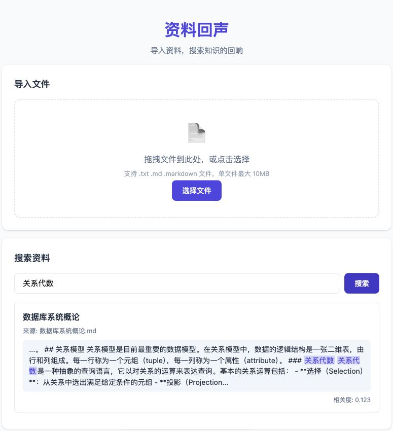

核心功能
文件导入
支持拖拽或选择 .txt / .md 文件，自动提取标题，基于内容 SHA-256 哈希去重
全文检索
基于 seekdb 的 MATCH AGAINST 全文搜索，使用 ngram parser 支持中文分词
来源回查
每条搜索结果展示文档标题和原始文件名，点击可查看完整内容
数据持久化
数据保存在本地 seekdb 数据库，程序重启后数据仍在，支持跨进程访问
线程安全
每个 Flask 线程使用独立 PyMySQL 连接，并发导入相同内容正确去重
响应式界面
适配桌面和移动端，所有用户输入安全转义防止 XSS 攻击
技术架构
数据库引擎
pylibseekdb 1.4.0.post1
SQL 接口
PyMySQL 1.2.0
全文索引
FULLTEXT INDEX + ngram
Web 框架
Flask 3.0+
前端
原生 HTML/CSS/JS
项目截图

浏览器实测：导入示例文档后搜索"关系代数"，返回带高亮摘要的结果
测试验证
单元测试
test_echo.py
44/44 通过
覆盖导入、去重、检索、持久化、并发、跨进程等真实 seekdb 操作
集成验证
test_integration.py
32/32 通过
完整生命周期测试，含跨进程子进程读写验证
已验证功能
- 中文全文检索（ngram 分词）
- 并发导入相同内容的去重（1 imported + 9 duplicate）
- 弹窗显示/关闭（× 按钮和背景点击）
- 数据持久化（关闭后重新打开数据仍在）
- 跨进程数据可见性
- 线程安全（无 Packet sequence number wrong 错误）
本地运行
重要说明：资料回声是一个本地运行工具，需要在您自己的电脑上启动服务。本展示网站仅作项目介绍，不提供在线上传或搜索功能。
快速启动
# 1. 克隆仓库
git clone --branch solution/ecosystem-qoder --single-branch https://github.com/littlerodents/powercontext.git
cd powercontext/qoder
# 2. 安装依赖
python3 -m venv .venv
.venv/bin/pip install -r requirements.txt
# 3. 启动服务
.venv/bin/python app.py
# 4. 访问 http://127.0.0.1:5000运行测试
# 单元测试（44 个测试用例）
.venv/bin/python test_echo.py
# 集成验证（32 个检查点）
.venv/bin/python test_integration.py设计亮点
🔐 真实数据库检索
所有搜索操作通过 seekdb 的 MATCH AGAINST SQL 完成，不使用内存列表伪造检索结果
⚡ 并发去重
多线程同时导入相同内容时，数据库 UNIQUE 约束保证原子性，一个 imported，其余 duplicate
🛡️ 安全防护
SQL 参数化防注入，前端 escapeHtml 防 XSS，文件名处理防目录遍历
📦 本地数据保存
数据完全保存在本地，不上传到任何服务器，保护用户隐私